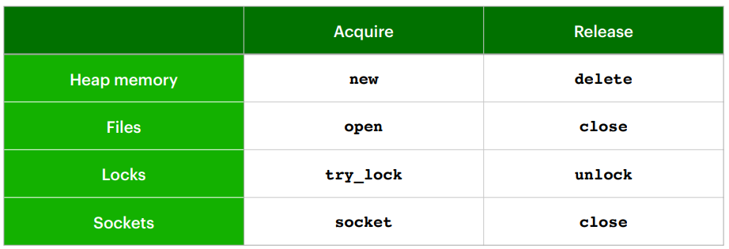

11.RAII and smart pointer
一、资源管理与RAII原则
在C++编程中，资源泄漏是一个常见问题，尤其是在异常发生时。为了确保资源总是被正确释放，C++引入了RAII（Resource Acquisition Is Initialization）原则。
1.1 RAII原则
RAII是一种资源管理模型，确保使用对象自动管理资源。按照RAII原则，资源在对象构造时获取，在对象析构时释放。这样可以保证即使在发生异常的情况下资源也能被正确释放。
更直观的名字是CADRE（Constructor Acquires, Destructor Releases），强调构造函数获取资源，析构函数释放资源的概念。
1.2 为什么使用RAII？
- 对象在创建后立即可用，无需额外的初始化步骤。
- 对象永远不处于半有效状态，要么完全管理其资源，要么在异常发生时自动释放资源。
- 析构函数总是在对象离开作用域时调用，因此资源总会被释放。
1.3 RAII的实践
以下几种都会出现RAII问题：

文件操作示例
不遵循RAII原则的代码示例与遵循RAII原则的代码示例对比：
1 | |
锁的管理示例
使用lock_guard自动管理互斥锁，避免忘记释放锁或异常导致锁未释放：
1 | |
lock_guard的简化实现：
1 | |
二、RAII 和智能指针
2.1 非RAII示例
使用原始指针管理内存，存在异常时资源泄露风险：
1 | |
2.2 C++中的智能指针
C++提供了几种“智能”指针来自动管理资源，遵循RAII原则：
std::unique_ptr：独占所指资源，不可复制，但可以移动。std::shared_ptr：共享所指资源，可复制，引用计数为零时释放资源。std::weak_ptr：不拥有资源，用于解决std::shared_ptr间的循环引用问题。
2.3 std::unique_ptr
std::unique_ptr独占其所指向的资源，并在析构时释放该资源。它不能被复制，防止多个指针同时管理同一资源。
1 | |
尝试复制std::unique_ptr会导致编译错误，因为其复制构造函数和复制赋值操作符被删除。
假设可以复制std::unique_ptr，会导致的错误：
2.4 std::shared_ptr
std::shared_ptr允许多个指针共享对同一资源的拥有权。当最后一个shared_ptr被销毁时，资源才会被释放。
1 | |
2.5 std::weak_ptr
std::weak_ptr用于指向std::shared_ptr管理的对象，但不影响对象的引用计数。它主要用于解决std::shared_ptr之间的循环引用问题。
2.6 智能指针创建函数
推荐使用标准库提供的智能指针创建函数，因为它们可以更安全地分配资源，并减少代码中的裸new操作。
std::make_unique<T>(args...)：创建std::unique_ptr。std::make_shared<T>(args...)：创建std::shared_ptr。
1 | |
总是优先使用std::make_unique()和std::make_shared()创建智能指针，它们不仅提供了类型安全和异常安全保证，还可以简化代码并提高可读性。